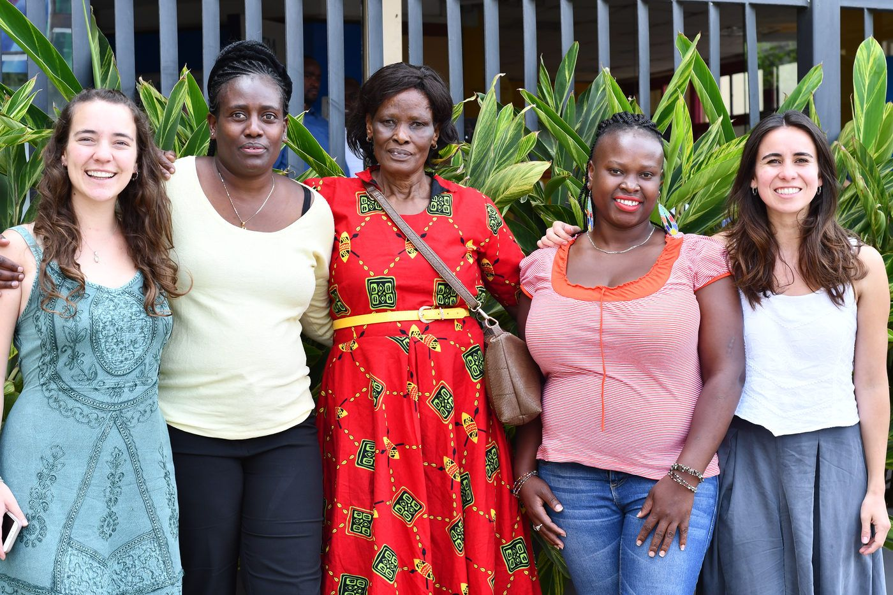
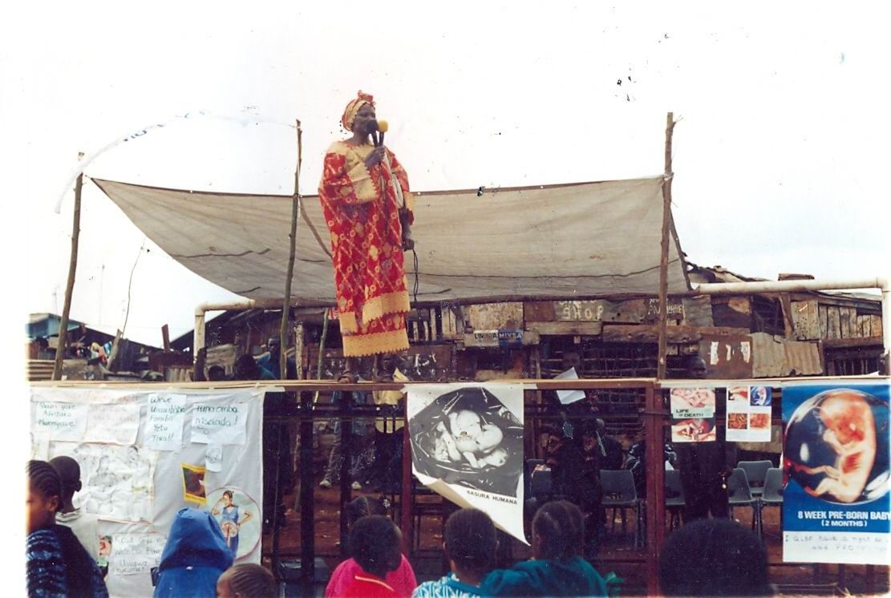
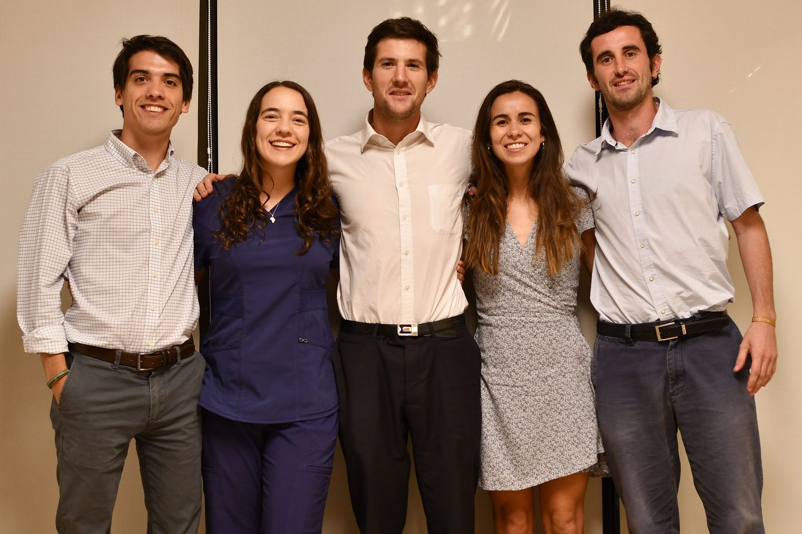
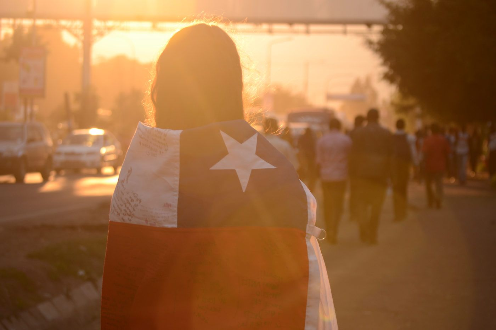
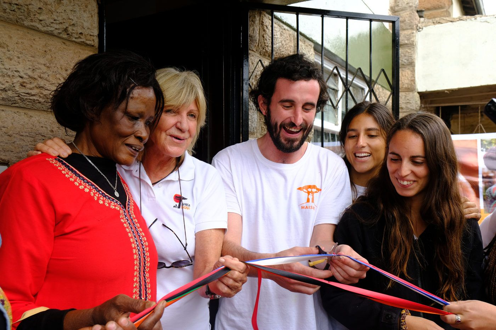
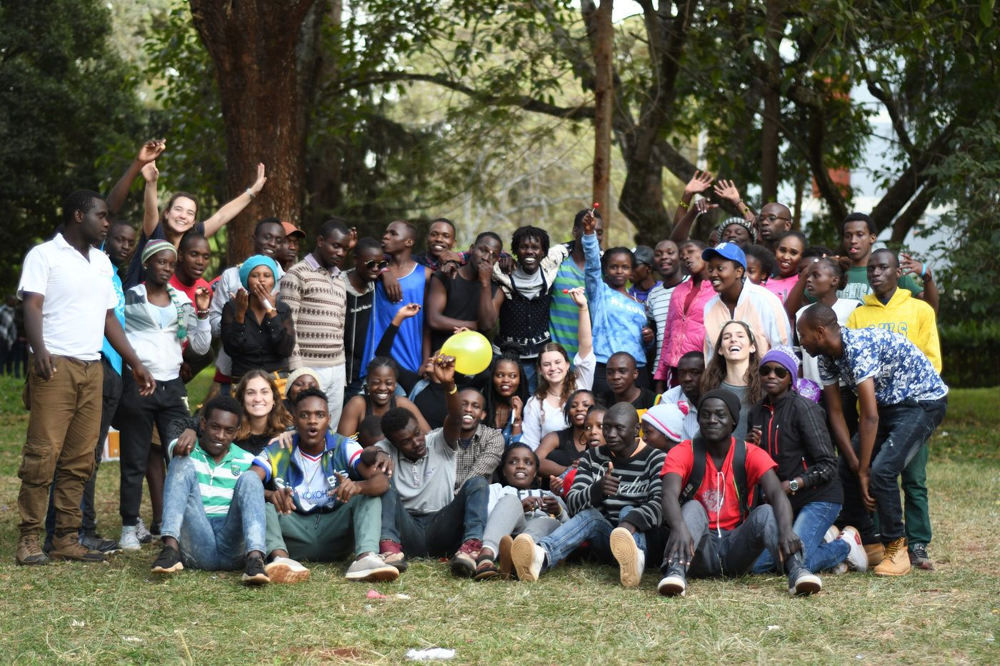
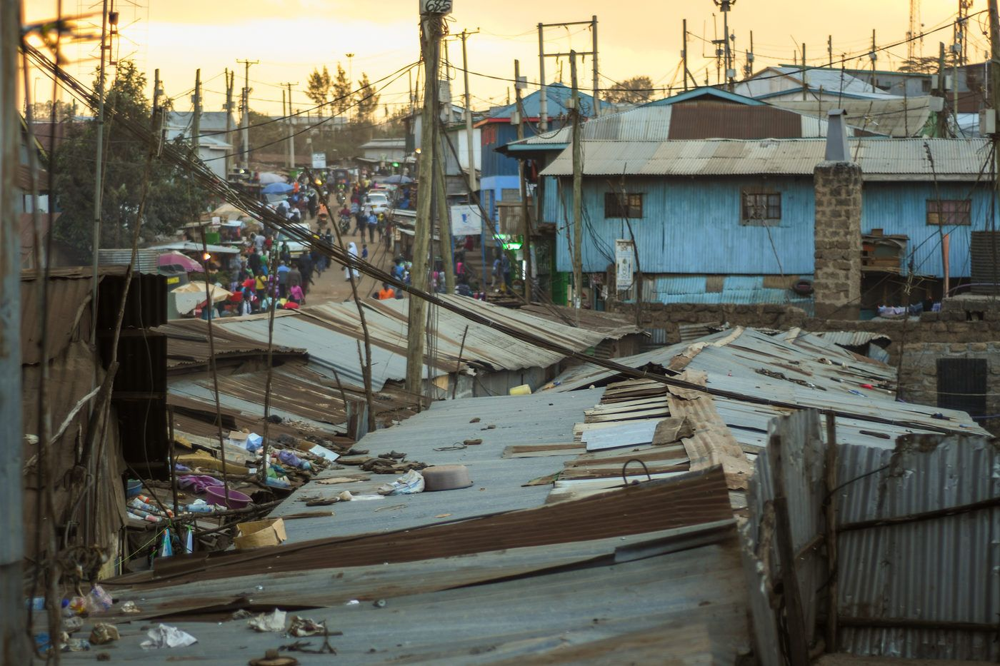
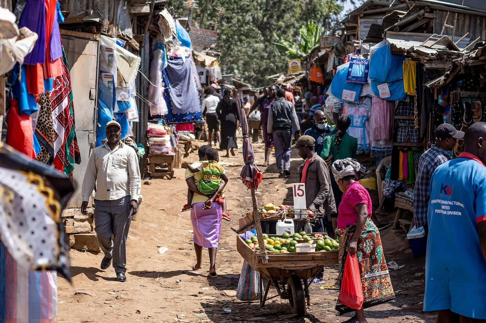

Maisha significa vida
Somos una fundación que nace de la colaboración entre Chile y Kenia, comprometida con la dignidad de la persona, para acompañar a mujeres, madres y jóvenes.

Chile ♥ KeniaSomos
Una red entre Chile y Kenia
Comprometida con la dignidad de la persona, trabajando por acompañar a mujeres, madres y jóvenes.
Misión
Acompañar y ofrecer oportunidades
Acompañar y ofrecer oportunidades de crecimiento a embarazadas, madres y jóvenes en contextos vulnerables.
Visión
Toda madre, en condiciones dignas
Ser la principal red de acompañamiento para mujeres, logrando que toda madre reciba a su hijo en las condiciones dignas que ambos merecen.
Respeto a la vida
Estamos comprometidos con el respeto a la vida y la dignidad de la persona humana.
Responsabilidad
Un acompañamiento concreto a embarazadas, madres y adolescentes que requieren una red de apoyo.
Cooperación
Trabajamos en equipo, de forma horizontal y apoyándonos en actores locales.
Equidad
Igualdad de oportunidades y no discriminación.
Nuestra historia
Maisha nació en el corazón de Kibera
Mama Domitila Ayot veía cómo muchas mujeres y adolescentes de su población quedaban embarazadas con escaso o nada de apoyo, en condiciones de pobreza extrema. Decidió aportar con lo poco que podía entregar.
- 2009
El Centro de Esperanza Edel Quinn
Mama Domitila recortó papeles con su número de teléfono y los pegó por Kibera, esperando que quien buscara un hombro donde apoyarse pudiera recurrir a ella. Así nació el Centro de Esperanza Edel Quinn, dedicado a embarazos en crisis.

- 2015
Cinco chilenos en Kenia
Un grupo de voluntarios chilenos en un hospital de bajos recursos se cruzó con esta pequeña gran iniciativa local y decidió convertirse en una verdadera red de apoyo.

- 2016
Nace Maisha
En alianza con Edel Quinn Centre se forma Maisha, que en suajili significa vida.

- 2017
Fundación en Chile
Maisha se constituye legalmente en Chile como fundación sin fines de lucro operativa en el extranjero.
- 2019
Nuevo centro de acogida
Se adopta la figura de CBO en Kenia y se inaugura el nuevo centro de acogida para madres junto a la organización África Digna.

- 2020
Cuatro programas
Se consolidan los programas de acogida, salud, educación sexual y sustentabilidad.
- 2022
Profesionalización
El equipo en Chile y Kenia se profesionaliza, y The Maisha Market se constituye legalmente como tienda solidaria.
- 2026
Nuevas caras e ideas
Comenzamos el año con nuevo directorio. El sueño de un Maisha Chile y la casa propia se va haciendo realidad.

Sobre Kenia
La “montaña luminosa”
Un país del este de África conocido por su variedad de paisajes, animales y personas de 44 etnias.
- CapitalNairobi
- Población56,2 millones
- Superficie580.367 km²
- Idiomas oficialesInglés y suajili
- Esperanza de vida67 años
Sobre Kibera
“Bosque” o “jungla”
El slum más grande de Kenia y el segundo de África: una población informal en los suburbios de Nairobi con escaso acceso a servicios básicos.
- Densidad+2.000 personas por hectárea
- UbicaciónSuburbios de Nairobi
- Donde trabajamosCentro de acogida Maisha


Equipo
Las personas detrás de Maisha
Directorio
Equipo
Asesores
Las fotos de cada persona se agregan desde el administrador de contenido.

Memorias
#ImpactoMaisha
Nuestra memoria anual 2025 reúne el impacto de la fundación, testimonios y el trabajo de estos años.
Agenda 2030
Con nuestras acciones contribuimos a estos Objetivos de Desarrollo Sostenible de la ONU.
- 1Fin de la pobreza
- 3Salud y bienestar
- 5Igualdad de género
- 8Trabajo decente
- 10Reducción de las desigualdades
- 13Acción por el clima
- 16Paz y justicia
- 17Alianzas